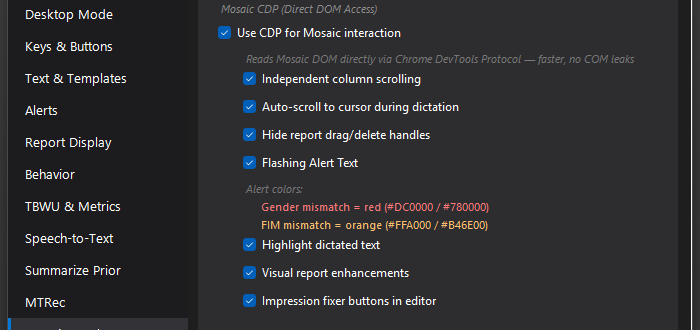

Independent Column Scrolling
Makes Mosaic's Transcript, Report, and utility columns scroll independently instead of the whole page moving at once.

What it does
By default, Mosaic scrolls its layout as one page: scroll the report and the transcript goes with it. With this on, MosaicTools injects styling via CDP so the Transcript, Report, and sidebar/utility columns each scroll on their own. You can park the transcript where you want it, scroll the Final Report to the impression, and keep a utility panel pinned — each column holds its own position.
How to turn it on / set it up
- Settings → Experimental → check Use CDP for Mosaic interaction (Mosaic restart needed on first enable).
- Check Independent column scrolling underneath it.
Using it
Once enabled, it's transparent — the columns just behave the way you'd expect a modern app to behave. A defensive scroll guard also runs inside the report editor to catch Mosaic's habit of yanking the report back to the top a second after an edit, reverting those unwanted jumps within about 150 ms.
Tips & gotchas
- Recording border: as of 5.5.3, Mosaic's native red "recording" outline around the panel is no longer clipped to tiny corner dots while this is on — the full red border shows during recording, matching the scrolling-off behavior.
- Opening Mosaic's Settings/Profile page used to leave the report unscrollable with a clipped toolbar; the styling now cleans itself up when you leave the report view and re-applies when you return.
- If you use the RadPair page inside Mosaic and see layout weirdness there, turning this off is the known workaround — the injected CSS can interact badly with that page.
- Like all Mosaic CDP features, a Mosaic update can temporarily change behavior until MosaicTools adjusts.